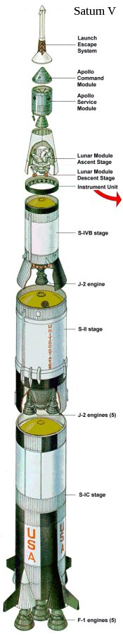
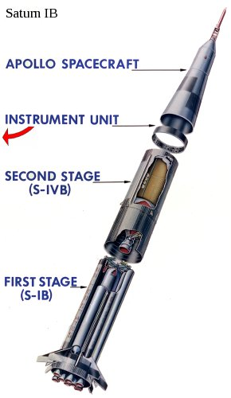
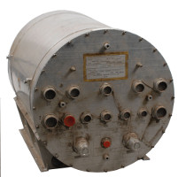
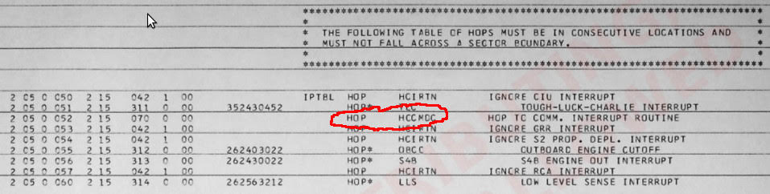
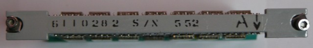
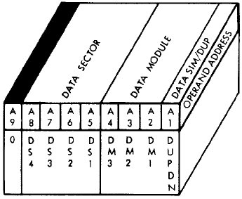
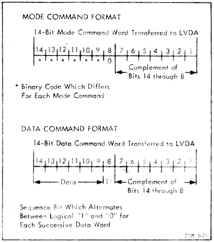

|
Factoid
People generally think that the guidance computer (AGC) of
the command module controlled the Saturn rocket, but it
isn't true. During burns of the S-II and S-IVB rocket
stages, it was
possible for the CSM's AGC to control the steering, as a
backup to the LVDC. That backup capability was never
used in a mission. This was not possible during burns
of the first stage (S-IB or S-IC). However, the
AGC's ability to directly control the Saturn IVB was used
for other purposes during the mission. Also, see below. |
|  |
|
 |
The LVDC and the AGC did not actually have any direct
interaction, so we may as well talk about how the AGC
interacted with the Saturn before immersing ourselves in
too much detail about the LVDC.
If you look
at either of the graphics at the end of the preceding
section, you'll see the four ways that the Instrumentation
Unit (IU) in the Saturn IVB and the Spacecraft (i.e, the
Command Module) — which are separated by a horizontal
dotted line near the tops of the two graphics —
interacted:
However, it was also possible for the spacecraft to send
the flight control computer a signal, the Mode Command,
which instructed it to accept Alternate Steering Commands
from the AGC rather than the default steering commands
from the LVDC/LVDA. Thus, the AGC could steer the
Saturn IVB (but not some of the other Saturn stages) by
this mechanism.
Of course, it was also desirable for the spacecraft to be
able to monitor the activity of the Saturn, even under
normal conditions when the LVDC was controlling the
rocket. Since the spacecraft had its own Inertial
Measurement Unit (IMU), it knew its own orientation and
acceleration — and hence the Saturn's — at all times, and
the AGC could integrate these quantities to know the
velocity and position at all times. Thus it was not
necessary for the IU to communicate that information to
the spacecraft in order for the AGC to monitor the
physical motion of the rocket and to display it for the
astronauts on the DSKY.
I actually have an interesting graphic of the monitoring process to show you. This graphic is not from physical system. Rather, Riley Rainey has used the "equation defining document" which specified how the Instrumentation Unit (IU) was supposed to behave, to model the physical behavior of the rocket and the spacecraft's IMU, allowing Virtual AGC to monitor the launch behavior on a simulated DSKY. Here's a short movie he has created of that simulation. It's admittedly a little fuzzy, since I blew it up by about 2×, but perhaps we'll be able to get a better one sometime in the future:
Describing the overall structure of the software loaded into the
LVDC is a bit tricky at the present time. That's because
documentation is scarce, our cache of original LVDC software is
sparse, and the original development process seemed quite
compartmentalized. By the latter, I mean that programmers
concentrated on the specific areas to which they were assigned,
and often seem to have had little cognizance of even the most
basic features of the software when those features happened to be
outside their narrow specialization. Plus the set of LVDC
programmers available to me is limited, so I don't have
representatives of all of those specializations to consult with.
In short, important aspects of my descriptions in these sections
concerning the gross structure of the software are based on
my own inferences and on the recollections of developers
unfamiliar with the details. So my comments about the
program structure with a large grain of salt.
With that said, let's contrast the overall structure of the LVDC
code vs the software source code for the Apollo Guidance Computer
(the programs COLOSSUS, LUMINARY, and so on) and for the Abort Guidance System. All of these
non-LVDC programs were monolithic in nature. What I
mean by that is that although the AGC and AGS software was
structured into various semi-independent sections, for which the
development of each was presided over by specialists in those
specific areas, the source code for them was nevertheless
presented to the programmers in a single large chunk — i.e., a
single, unified program listing. Every AGC or AGS developer
saw the entire source code, regardless of whether it pertained to
them or not. The natural result was that it was possible
(and even likely) for an AGC or AGS developer to have some grasp
of the large-scale structure of the software, beyond his or her
own narrow area of specialization. Similarly, every word
stored in the AGC or AGS core memory came from that source
code. In that sense, each AGC or AGS program listing was
entirely self-contained. If you were able to assemble those
program listings, then you obtained a rope image that could be
loaded into the computer and run. Conversely, every word in
core-memory either came directly from the associate program
listing or from some action taken by the code in that program
listing. When you look at a program listing for (say)
LUMINARY, you see the entire contents of the Lunar
Module's AGC's core memory.
The overall structure of the LVDC software, however, is
fundamentally different. Simultaneously loaded into the LVDC
core memory were several different logically-distinct
"programs", each with different sets of source code,
assembled separately from each other, and having different
areas of specialization. Thus assembly of any given one of
these programs did not produce a full core-rope image: merely a
partial rope image. A full rope image could be obtained only
by merging all of the partial core-rope images from the different
assemblies of the several sets of source code. The separate
programs I'm aware of are discussed individually in the sections
that follow, but in brief, they were:
A similar situation arises in modern computer systems, where you
typically have an "operating system" program and "application
programs" running in the computer at the same time. The
application programs rely on the operating system for certain
functionality, but have no understanding of how the operating
system provides that functionality. All the application
program needs to know is the exact method for requesting the
desired function from the operating system. Similarly, the
operation system stands ready to provide the desired
functionality, but has no knowledge of the internal workings of
the application program requesting service.
In the LVDC, the method by which interaction between independent
but simultaneously-loaded programs worked was for there to be an
agreed-upon set of specific memory addresses hard coded into the
programs. For example, one program would know that to obtain
a certain type of service, it had to call a routine at a certain
fixed address in memory. Another program would know that it
had to put code providing certain types of services at certain
fixed addresses, but have no other knowledge of the program(s)
utilizing that functionality.
Because of this much higher degree of compartmentalization,
programmers working on (say) the Flight Program might have no
cognizance at all of the Preflight Program, the developers of
which might have no cognizance of the Executive Control Program,
and so on. And unfortunately, that means that we
don't, either.
I don't know anything at all about the Preflight Program at
present. I.e., there is no surviving documentation or source
code for it as far as I know. I will provide information
about it if/when it becomes available.
As it relates to the AS-206RAM
Flight Program, however, I do have a couple of reasons to
believe that the AS-206RAM Flight Program would have been used in
conjunction with a Preflight Program:
Original LVDC software developer Pat Woods tells me that there
was no Executive Control Program (ECP) in use until the Apollo 12
mission. This anecdotal information is backed up by the fact
that the Saturn Launch Vehicle Astrionics Systems Handbook has 14
pages of descriptive material about the ECP in its November
15 1969 release (see section 11.2.1 in particular), but does
not even mention the ECP at all in its November
1 1968 release.
I won't describe the ECP further here, since we have no source
code for it, but if you are interested you should consult the
later release of the Astrionics Systems Handbook mentioned above.
It is unfortunately not clear from the description whether the
ECP constituted a program separate from the Flight Program
with which it was used — i.e., whether it had a separate set of
source code that was assembled separately from the Flight Program
— or whether the two had an integrated code base that was
assembled as a single operation.
The software was apparently known simply as the Flight Program,
and didn't have a catchy name such as "Luminary".
You may also see references to the Generalized Flight Program
(GFP) or generalized Flight Program System, in use from Apollo 12
onward. You may recall from the preceding section that
the Executive Control Program also came into use from Apollo 12
onward. My supposition would be that this simply means that
GFP = ECP + FPWas the software classified? No. Or at least it was not classified at the time period from which we begin to have any information. Several people associated with the development have stated to me that it was classified. But classified material must be stamped with one of the designations CONFIDENTIAL, SECRET, or TOP SECRET. The available software listing is not so stamped, and therefore should not be considered classified. Undoubtedly IBM Federal Systems Division considered it confidential at the time, under the common usage of the word, but that doesn't make it classified.
The basic purpose of the Apollo Saturn 206 S-IVB Restart Alternate Mission is to place the S-IVB stage into orbit and test its restart capability, simulating the AS-501 mission profile. In the event S-IVB restart problems occur in the early Saturn V flights, this mission will be flown to help correct or solve the problems. The primary objective of the SA-206 Launch Vehicle is to insert the S-IVB/IU/Payload configuration into a near earth 100 nautical mile circular orbit. The payload consists of a Spacecraft LM Adapter (SLA) and a 25° Nose Cone (NC #2).As usual in these matters, what we have is not the punch cards on which the assembly-language source code was originally provided to the assembler program, but the "assembly listing" output by the assembler. Unfortunately, the status of the assembly process for it found 41 warnings and 7 errors — meaning that there were problems in the source code and that the assembly process failed. Thus the program wouldn't actually work as-is anyway, even assuming we had an LVDC or a simulation of an LVDC in which to run it. That doesn't reduce its instructional value any, though, and it doesn't mean that some enterprising individual couldn't fix it up now to make it work!
As it happens, the source code from the assembly-listing printout
has been entirely transcribed into machine readable form.
That's a lot more convenient to deal with that scanned page
images, since you can do things like text searches on it, or even
assemble it using the nifty new LVDC assembler I've written (see below).
The problem, of course, is that the transcribed source code is
just as much subject (or hopefully, it will eventually turn out, not
subject) to ITAR export restrictions as the scanned images are, so
this LVDC source code is not presently available in our software
repository.
The middle group of pages above shows a few auxiliary subroutines
for computing the sine, cosine, arctangent, and spare root
functions, plus a 3×3 matrix-multiply routine. Note that
these are some of the very algorithms described in section 13 of the
EDD (LVDC Equation Defining Document), so the source code
can actually be compared to the defining documentation if one so
desired. The two images at the top show an area of the
program where some constants are defined, while the two at the
bottom show a portion of the assembly listing's cross-reference
table.
Regarding preloaded constants for LVDC memory, all missions (I
think!) were associated with a report called the "launch vehicle
operational flight trajectory", and these documents (among other
things) listed the LVDC preload settings. Unfortunately,
most of these reports are presently unavailable, though we do have a
few of them. For example, the AS-202 report says that
"LVDC symbol" T1i, the time-to-go for first IGM stage,
is preloaded with 299.25 sec, while Vex1, the J2
exhaust velocity for first IGM stage, is loaded with 4165.45
m/sec, and so on.
Finally, I claimed earlier that the AS-206RAM Flight Program is
not, of itself, a complete program. In that assessment, I'm
not referring to the fact that when you try to assemble it you
find that there are a few missing symbols, associated with
variables that haven't been allocated. That problem
is simply due to the fact that the listing we have is an
engineering version of the code that had never been debugged to
the point of being released. It's quite easy, I think, to
fix up the assembly-time errors and warnings in the AS-206RAM so
that it assembles error-free, and is entirely self-contained in
that sense. But it is still not complete in the larger sense
I mean.
Rather, when I say that AS-206RAM is incomplete, I mean that it
references code at specific hard-coded addresses which are not
defined by the AS-206RAM program. Indeed, there are large
areas of core memory left undefined by the program. Even the
location in memory at which the power-up entry point should be
stored is left undefined. But for example, consider the
concrete example of the code necessary for processing commands
uploaded to the LVDC from mission control, as described in the Up-data section of this web-page.
When such a command is uploaded to the LVDC, an interrupt
occurs. The software then looks in an interrupt-vector
table, which appears on p. 207 of the program listing, and looks
like the following:

(This section is under construction. Its contents
may not yet be reliable.)
This section concerns the "PTC ADAPT Self-Test
Program". Strictly speaking, this program is not LVDC
software, and it is certainly not LVDC flight
software. But it fills in an important gaps in our
understanding of the LVDC and it is technically so close to
being "LVDC software" that it's really a matter of opinion as
to whether you want to call it that or not. (Hint:
I do want to call it that.) Let's begin the
explanation with a little terminology:
The PTC is
documented here, while the ADAPT and
ASTEC are documented here. The former document
(Chapter 7) helpfully includes a printout of the assembly
listing of a large chunk of software that it calls the "PTC
ADAPT Self-Test Program".
But it's not necessary to go into great detail about most of
that at the moment. For our immediate purposes, the only
important things to note about the PTC and ADAPT are:
In particular, we would expect the PTC ADAPT Self-Test
program to match LVDC Flight Program syntax. Indeed, its
assembly listing has clearly been produced by the LVDC
assembler program, although there are a few differences in the
way some of the output is formatted. In terms of how the
PTC's CPU has been "modified" relative to the LVDC, here's a
list of some of the differences visible at the software level,
though admittedly it may not be too meaningful to you until
you study more about how the LVDC works (and particularly its
instruction set) later on:
As self-test software, significant chunks of the program are
devoted to testing the CPU instructions itself ... i.e., deep,
system-level self-test code which is not present in the LVDC
Flight Program. This is obviously a very significant
feature in terms of helping to test any eventual LVDC CPU
emulator we may be able to come up with. Unfortunately,
experience with the AGC suggests that the most-interesting
CPU-instruction testing we could have would be extensive
checks of the DIV instruction, and probably of the
behaviorally very-complex EXM instruction.
These are the very instructions which the PTC omits from its
repertoire, and naturally it cannot test them. Oh, well!
The PTC ADAPT Self-Test Program is also quite significant in
terms of size, since it is nearly 60% the size of the
AS206-RAM Flight Program covered in the preceding section
above. On the other hand, much more of the program is
explicitly devoted to routine bookkeeping, which in the LVDC
program would instead be implicitly handled by the assembler,
which means that not all of the bulk is related to complexity.
But most significantly, there's no question of the PTC ADAPT
Self-Test Program's "export" being restricted by ITAR:
It isn't! So it can be freely provided to you, and you
need not (please don't!) apply personally to me to get access
to it. An additional bonus is that while the AS206-RAM
assembly listing we have is simply a snapshot of work of
ancient work in progress, which cannot even be assembled
error-free without a bit of massaging, the PTC ADAPT Self-Test
Program is a mature, debugged, working program.
As far as the versioning of the software, there is nothing
embedded within the assembly listing itself which dates
it. However, given that it is printed in the PTC
document mentioned above, which is dated 5 MARCH 1965, I think
we can tentatively suppose that the software too is from early
1965. (Whereas the AS206-RAM program is from late 1967.)
Beyond that, there's also the academic question of the
versioning of the LVDC assembler used. Both the feature
set and the format of the output is more primitive in the PTC
assembly than in the AS206-RAM assembly. For all these
reasons, it's fair to infer that an earlier version of the
assembler was used for the PTC assembly, in which these
more-advanced convenience features did not yet exist.
The PTC ADAPT Self-Test Program will be transcribed into
source-code files Real Soon Now, so that it can be assembled
by the yaASM.py assembler. That has not yet occurred,
but you can observe its progress online if you like:
Folder in our GitHub repository for PTC ADAPT Self-Test Program source-code files
For now, though, only the scanned assembly listing is
available. To make it a little more convenient to work
with, I've extracted the listing from the original scanned PTC
document linked above, so that it can be viewed as a set of
image files, one per scanned page of the listing:
Here's a quick index to the zipfile:
These images correspond to the original PTC document's pages
434-717. In general, the entire Chapter 7
("Calibration") of that document is relevant, as it contains
detailed flowcharts for the program, in addition to operating
instructions. Chapter 2 ("Theory of Operation") contains
detailed information about the PTC CPU and its peripheral
devices.
|  |
||||
|
Mnemonic |
A 8 |
A 9 |
O P 4 |
O P 3 |
O P 2 |
O P 1 |
Timing (computer cycles) |
Description of the instruction |
||||||||||||||||||||||||||||||||||||
|---|---|---|---|---|---|---|---|---|---|---|---|---|---|---|---|---|---|---|---|---|---|---|---|---|---|---|---|---|---|---|---|---|---|---|---|---|---|---|---|---|---|---|---|---|
| HOP |
X |
X |
0 |
0 |
0 |
0 |
1 |
This instruction combines an unconditional jump
instruction with various other configuration options, such
as memory-sector selection. The way it works is that
the address A1-A9 points to a memory word that contains a
"HOP constant", and the HOP instruction transfers
that HOP constant into the HOP register. Recall that
A1-A8 select the offset within a 256-word sector, and A9 is
the "residual bit" that selects between the current sector
and the "residual sector". There is no provision for a
partial HOP constant, and the full HOP constant needs to be
given every time a HOP instruction is
used. See also CDS and TRA. Although the machine instruction requires the address of the HOP constant to be provided as its operand, the assembler is flexible enough to allow the operand to instead be a left-hand symbol for the target location in the code. When it encounters this situation, the assembler transparently performs a workaround. For the sake of discussion, imagine assembly-language code something like the following: HOP HIGTHRWhat the assembler does in a case like this is:
|
||||||||||||||||||||||||||||||||||||
| MPY |
X |
X |
0 |
0 |
0 |
1 |
1 (results available after 4) |
LVDC only ... not PTC. This is a multiplication instruction. It multiplies two 24-bit numbers to produce a 26-bit product. The accumulator provides the address of one operand, and the address embedded in the instruction points to the other operand. Recall that A1-A8 select the offset within a 256-word sector, and A9 is the "residual bit" that selects between the current sector and the "residual sector". In both cases, the most-significant 24-bits of the operands are used, and the least-significant 2 bits of the operand are ignored. A partial product (24 bits from the addressed memory times the 12 less-significant bits from the accumulator) can be fetched from the P-Q Register (0775 octal) on the 2nd instruction (or more accurately, two computer cycles) following MPY, though there is no need to do so if that value isn't desired by the program. The full product is available from the accumulator or from the P-Q Register on the 4th instruction (more accurately, 4 computer cycles) following MPY. However, the result will remain in the P-Q register until the next MPH, MPY, or DIV. |
||||||||||||||||||||||||||||||||||||
| PRS |
X |
X |
0 |
0 |
0 |
1 |
TBD |
PTC only ... not LVDC This is a "print store" operation. Here's what the PTC documentation (see p. V-2-22) has to say about it: Initiates a printer operation. The printer operation performed is specified by the operand address. I believe that the data transferred to the printer is often buffered by the BCI pseudo-op. |
||||||||||||||||||||||||||||||||||||
| SUB |
X |
X |
0 |
0 |
1 |
0 |
1 |
Subtracts the contents of a word pointed to by the address
embedded within the instruction from the accumulator, and
puts the result back into the accumulator. Recall that
A1-A8 select the offset within a 256-word sector, and A9 is
the "residual bit" that selects between the current sector
and the "residual sector". See also RSU. Regarding borrow from the operation, the CPU provides no direct way of accessing it, and thus no easy way to perform multi-precision subtraction. Refer to the notes for the ADD instruction for more information. |
||||||||||||||||||||||||||||||||||||
| DIV |
X |
X |
0 |
0 |
1 |
1 |
1 (results available after 8) |
LVDC only ... not PTC. This is the division instruction. The contents of the accumulator are divided by the operand pointed to by the address A1-A9 embedded within the instruction to produce a 24-bit quotient. Recall that A1-A8 select the offset within a 256-word sector, and A9 is the "residual bit" that selects between the current sector and the "residual sector". The quotient is available in the P-Q Register (0775 octal) on the 8th instruction (more accurately, 8 computer cycles) following the DIV. However, the result will remain in the P-Q register until the next MPH, MPY, or DIV. |
||||||||||||||||||||||||||||||||||||
| TNZ |
X |
X |
0 |
1 |
0 |
0 |
1 |
This is a conditional jump instruction, which branches to
the address embedded in the instruction if the accumulator
is not zero, but simply continues to the next instruction in
sequence if the accumulator is zero. Bits A1-A8 of the
embedded address represent the new offset within the
currently selected 256-word instruction sector, while bit A9
gives the syllable number within that word. The
"residual sector" cannot be accessed. See also TMI. As mentioned, the target address for the machine instruction itself had to be within the current sector, because its 8-bit address offset is embedded within the instruction. However, the assembler would transparently work around this problem, allowing essentially any target address to be used. For the sake of discussion, imagine an assembly language instruction, TNZ OINITin which the target location OINIT is not in the current memory sector. The workaround procedure used by the assembler was this:
|
||||||||||||||||||||||||||||||||||||
| MPH |
X |
X |
0 |
1 |
0 |
1 |
5 |
LVDC only ... not PTC. This is a multiplication instruction. It is exactly like MPY except that the program "holds" until the multiplication is complete, so that the product is available from the accumulator or from the P-Q Register at the next instruction following MPY. However, the result will remain in the P-Q register until the next MPH, MPY, or DIV. |
||||||||||||||||||||||||||||||||||||
| CIO |
X |
X |
0 |
1 |
0 |
1 |
TBD |
PTC only ... not LVDC. Here's what the PTC documentation (see figure 2-10) has to say about it: "Controls the input, output operations of the CPU. The operand address bits specify the operation to be performed (see figure 2-11 for CIO codes used by PTC)." |
||||||||||||||||||||||||||||||||||||
| AND |
X |
X |
0 |
1 |
1 |
0 |
1 |
Logically ANDs the contents of the accumulator with the contents of the address embedded within the instruction and places the result in the accumulator. Recall that A1-A8 select the offset within a 256-word sector, and A9 is the "residual bit" that selects between the current sector and the "residual sector". | ||||||||||||||||||||||||||||||||||||
| ADD |
X |
X |
0 |
1 |
1 |
1 |
1 |
Adds the contents of the
accumulator with the contents of the address embedded within
the instruction and places the result in the
accumulator. Recall that A1-A8 select the offset
within a 256-word sector, and A9 is the "residual bit" that
selects between the current sector and the "residual
sector". What about the carry bit? As far as I can tell, the CPU has no provision for carry bit that's useful at the software level. If you want to do multi-word precision arithmetic (say, 52-bit addition instead of just 26-bit addition), then you have to find some indirect, software-only way of detecting carry rather than on relying on the CPU to provide you with some easy way of handling it. It's certainly mathematically possible to do so: When adding two addends of the same sign using 2's-complement arithmetic, you can detect carry because the sum has the opposite sign of the addends, whereas adding two addends of opposite signs cannot result in carry anyway. But the coding to exploit this mathematical possibility is obviously going to be cumbersome and inconvenient. (The low-level adder circuit itself can deal with a carry bit, of course. The adder performs additions serially, starting with the least-significant bit and moving upward to the most-significant, and at each bit-stage there's a carry bit from the previous stage to worry about. However, the final carry bit is not accessible to software, and the carry-bit latch is cleared by any CLA instruction, making it very tough to transfer the carry-bit latch's contents from one word-addition to the next. In theory, if you could figure out a way to do multi-precision arithmetic without using CLA, perhaps you could exploit that hidden carry bit. But I'm having trouble seeing any way you might do it. That could just be my failure of imagination, of course.) |
||||||||||||||||||||||||||||||||||||
| TRA |
X |
X |
1 |
0 |
0 |
0 |
1 |
Note that there is also a pseudo-op, TRA**, which
is not a TRA instruction, although it has a
similar effect at assembly time to the effect the affect of
the TRA instruction at runtime. TRA is an unconditional jump instruction, which branches to the address embedded in the instruction. Bits A1-A8 of the embedded address represent the new offset within the currently selected 256-word instruction sector, while bit A9 gives the syllable number within that word. The "residual sector" cannot be accessed. Note, however, that the assembler transparently worked around the limitation that the target address had to be in the same sector. The assembler would automatically insert a HOP instruction instead of a TRA whenever it found that it was necessary to do so. For example, consider the instruction "TRA ETCBTC". If the target location ETCBTC is within the current instruction sector, the assembler would indeed assemble this exact as expected, using a TRA instruction with opcode 1000. Actually, the assembler would refuse to directly do a TRA to a target in the same instruction sector under some circumstances, presumably to help guard the programmer from easy-to-make errors. The condition I've noticed in which this occurs is if the target address has been tagged by the assembler as being in a region with a different setting for the data module or sector, since unlike a HOP instruction, a TRA instruction doesn't alter the DM/DS settings. Whereas if a CDS instruction (which changes the DM/DS settings in the processor itself) happens to be at the target location, it doesn't trigger a replacement by HOP. Quite a complicated set of conditions! One wonders if the original programmers actually had much awareness at the time (or cared!) that these substitutions were being made for them. But if the target location (ETCBTC in this example) wasn't within the current instruction sector or failed the DM/DS conditions, then the assembler would instead perform the following complicated maneuver which preserves the expected program logic, at the cost of an extra machine cycle and an extra word of memory:
|
||||||||||||||||||||||||||||||||||||
| XOR |
X |
X |
1 |
0 |
0 |
1 |
1 |
Logically exclusive-ORs the contents of the accumulator with the contents of the address embedded within the instruction and places the result in the accumulator. Recall that A1-A8 select the offset within a 256-word sector, and A9 is the "residual bit" that selects between the current sector and the "residual sector". | ||||||||||||||||||||||||||||||||||||
| PIO |
X |
X |
1 |
0 |
1 |
0 |
1 |
Reads or writes an i/o
port. Bits A1-A9 select the source and
destination of the i/o. A table of the i/o ports
vs. addresses is given in the following section. In so far as assembly-language syntax is concerned, the operand of the instruction is always a literal octal numerical constant. |
||||||||||||||||||||||||||||||||||||
| STO |
X |
X |
1 |
0 |
1 |
1 |
1 |
Stores the contents of the
accumulator in the word indicated by the address embedded
within the instruction. Recall that A1-A8 select the
offset within a 256-word sector, and A9 is the "residual
bit" that selects between the current sector and the
"residual sector". The following addresses are
special, as described in the
documentation of the STO instruction (see p. 2-17):
However, the description of 0776 and 0777 above is quite
misleading. For one thing, the way the
multiplication and division instructions work, the inputs
to those operations (multiplicand, multiplier, dividend,
divisor) are all supplied in the accumulator and memory
locations anyway, so why would you need an instruction to
separately access the multiplicand or divisor? The
answer is that this feature has nothing at all to do with
multiplication and division, but is instead crucial to
storing return addresses in subroutines and interrupts! The explanation is this: During the process of
executing any given LVDC instruction, a HOP constant for
the LVDC instruction at the next successive memory
address is formed. Keep in mind that the next
instruction successively in memory is not necessarily the
next instruction sequentially executed in time.
Whatever the next instruction executed — unless it happens
to be a multiplication or division (MPY, MPH,
DIV) — the previously-generated HOP constant is
temporarily shoved into multiplicand-divisor
register. Thus if the very next instruction executed
is STO 776 or STO 777 (and the
previous instruction was not MPY, MPH,
or DIV), what ends up getting stored in location
776 or 777 is not a multiplicand or divisor, but rather
the HOP constant for the memory address that numerically
follows the previously executed instruction.
Which is not useful at all when instructions are simply
executing sequentially, but is useful whenever there is a
transfer of control because the code to which control has
been transferred can use it to access its own return
address ... and there is no other painless method provided
in the instruction set to do so.
|
||||||||||||||||||||||||||||||||||||
| TMI |
X |
X |
1 |
1 |
0 |
0 |
1 |
This is a conditional jump
instruction, which branches to the address embedded in the
instruction if the accumulator is less than zero, but simply
continues to the next instruction in sequence if the
accumulator greater than or equal to zero. Bits A1-A8
of the embedded address represent the new offset within the
currently selected 256-word instruction sector, while bit A9
gives the syllable number within that word. The
"residual sector" cannot be accessed. See also TNZ. As mentioned, the target address for the machine instruction itself had to be within the current sector, because its 8-bit address offset is embedded within the instruction. However, the assembler would transparently work around this problem, allowing essentially any target address to be used. The workaround used by the assembler is that same as that described for the TNZ instruction above. Instructions for which the workaround have been applied are shown on the assembly listing as "TMI*" rather than "TMI". |
||||||||||||||||||||||||||||||||||||
| RSU |
X |
X |
1 |
1 |
0 |
1 |
1 |
Same as SUB, except that the
order of the operands in the subtraction is reversed. |
||||||||||||||||||||||||||||||||||||
| CDS or CDSD or CDSS |
X |
0 |
1 |
1 |
1 |
0 |
1 |
Change the
currently-selected 256-word data sector. For this
instruction, A9 forms a part of the instruction itself, so
only A1-A8 are significant. The partially overwrite
the HOP Register as follows: 
See also HOP. In terms of assembly-language syntax, there are the following variations: CDS SYMBOLNAMEThus CDS uses the characteristics of a variable name or a name defined with the DEQD or DEQS pseudo-ops (see below), whereas the module number and sector number are simply supplied with octal numeric literals in CDSD or CDSS. The difference between CDSD and CDSS is that the former selects duplex memory while the later selects simplex memory. In the usage I've seen, usage of CDSS is confined almost entirely to the context of USE DAT (see below). |
||||||||||||||||||||||||||||||||||||
| SHF |
0 |
1 |
1 |
1 |
1 |
0 |
1 |
Performs a logical shift
operation on the accumulator. For this instruction,
bits A8 and A9 form a part of the instruction itself, but of
the remaining bits only A1, A2, A5, and A6 are actually
used, as follows:
In terms of assembly-language syntax, I have never seen SHF itself used. The only variations actually used are SHL Nwhere N is a literal decimal numerical constant. However, N is not limited to just 0, 1, or 2, even those are all that SHF directly supports. If an operand N>2 is encountered, the assembler transparently replaces it with an appropriates sequence of shift-by-2 and shift-by-1 instructions. |
||||||||||||||||||||||||||||||||||||
| EXM |
1 |
1 |
1 |
1 |
1 |
0 |
1 |
LVDC only ... not
PTC. "Execute modified". This instruction takes an instruction stored at a specified memory location, forms a modified A1-A9 field for that instruction, executes that instruction, and then continues with the next instruction following the EXM (unless the program counter has been modified). For this instruction, A8 and A9 form a part of the instruction code, so only A1-A7 are significant. Only 4 different target words are allowed, 0600, 0640, 0700, and 0740, and they are all in the "residual sector". Many of the bits in A1-A7 represent various types of modifications to the embedded address at the target address rather than being address bits themselves. Here are the interpretations of bits A1-A7 in the EXM instruction:
In baseball terms, this is the "infield fly rule" of the LVDC: it clearly does something, but it's hard to grasp exactly what it does. |
||||||||||||||||||||||||||||||||||||
| CLA |
X |
X |
1 |
1 |
1 |
1 |
1 |
Store a value to the accumulator, from the memory word at the address embedded within the instruction. Recall that A1-A8 select the offset within a 256-word sector, and A9 is the "residual bit" that selects between the current sector and the "residual sector". |
|
Address Field from PIO Instruction |
Data Source |
Data Destination |
Specific
I/O Ports |
||||||||||||||||||||||||||||||||||||||||||||||||||||||||||||||||||||||||||||||||||||||||||||||||||||||||||||||||||||||||||||||||||||||||||||||||||||||||||||||||||||||||||||||||||||||||||||||||||||||||||||||||||||||||||||||||||||||||||||||||||||||||||||||||||||||||||||||||||||||||||||||||||||||||||||||||||||||||||||||||||||||||
|---|---|---|---|---|---|---|---|---|---|---|---|---|---|---|---|---|---|---|---|---|---|---|---|---|---|---|---|---|---|---|---|---|---|---|---|---|---|---|---|---|---|---|---|---|---|---|---|---|---|---|---|---|---|---|---|---|---|---|---|---|---|---|---|---|---|---|---|---|---|---|---|---|---|---|---|---|---|---|---|---|---|---|---|---|---|---|---|---|---|---|---|---|---|---|---|---|---|---|---|---|---|---|---|---|---|---|---|---|---|---|---|---|---|---|---|---|---|---|---|---|---|---|---|---|---|---|---|---|---|---|---|---|---|---|---|---|---|---|---|---|---|---|---|---|---|---|---|---|---|---|---|---|---|---|---|---|---|---|---|---|---|---|---|---|---|---|---|---|---|---|---|---|---|---|---|---|---|---|---|---|---|---|---|---|---|---|---|---|---|---|---|---|---|---|---|---|---|---|---|---|---|---|---|---|---|---|---|---|---|---|---|---|---|---|---|---|---|---|---|---|---|---|---|---|---|---|---|---|---|---|---|---|---|---|---|---|---|---|---|---|---|---|---|---|---|---|---|---|---|---|---|---|---|---|---|---|---|---|---|---|---|---|---|---|---|---|---|---|---|---|---|---|---|---|---|---|---|---|---|---|---|---|---|---|---|---|---|---|---|---|---|---|---|---|---|---|---|---|---|---|---|---|---|---|---|---|---|---|---|---|---|---|---|---|---|---|---|---|---|---|---|---|---|---|---|---|---|---|---|---|---|
| A9 |
A8 |
A7 |
A6 |
A5 |
A4 |
A3 |
A2 |
A1 |
|||||||||||||||||||||||||||||||||||||||||||||||||||||||||||||||||||||||||||||||||||||||||||||||||||||||||||||||||||||||||||||||||||||||||||||||||||||||||||||||||||||||||||||||||||||||||||||||||||||||||||||||||||||||||||||||||||||||||||||||||||||||||||||||||||||||||||||||||||||||||||||||||||||||||||||||||||||||||||||||||||
| X |
0 |
A |
A |
A |
A |
A |
0 |
A |
LVDC Accumulator Register |
LVDA Telemetry Registers |
(Note: Used
to output telemetry consisting of the values of variables,
typically via the TELEM macro in the LVDC source
code. For definitions of non-standard units of
measurement, see the later discussion
of that topic. Page-number references are to the
AS-206RAM LVDC source code or to its abridged
form.)
|
||||||||||||||||||||||||||||||||||||||||||||||||||||||||||||||||||||||||||||||||||||||||||||||||||||||||||||||||||||||||||||||||||||||||||||||||||||||||||||||||||||||||||||||||||||||||||||||||||||||||||||||||||||||||||||||||||||||||||||||||||||||||||||||||||||||||||||||||||||||||||||||||||||||||||||||||||||||||||||||||
| 0 |
1 |
A | A | A | A | A | 0 |
A |
LVDC Main Memory |
LVDA Telemetry Registers | |||||||||||||||||||||||||||||||||||||||||||||||||||||||||||||||||||||||||||||||||||||||||||||||||||||||||||||||||||||||||||||||||||||||||||||||||||||||||||||||||||||||||||||||||||||||||||||||||||||||||||||||||||||||||||||||||||||||||||||||||||||||||||||||||||||||||||||||||||||||||||||||||||||||||||||||||||||||||||||||||
| 1 |
1 |
A | A | A | A | A | 0 |
A |
LVDC Residual Memory |
LVDA Telemetry Registers | |||||||||||||||||||||||||||||||||||||||||||||||||||||||||||||||||||||||||||||||||||||||||||||||||||||||||||||||||||||||||||||||||||||||||||||||||||||||||||||||||||||||||||||||||||||||||||||||||||||||||||||||||||||||||||||||||||||||||||||||||||||||||||||||||||||||||||||||||||||||||||||||||||||||||||||||||||||||||||||||||
| X |
0 |
A |
A |
A |
A |
A |
1 |
0 |
LVDC Accumulator Register | LVDA Output Registers |
|
||||||||||||||||||||||||||||||||||||||||||||||||||||||||||||||||||||||||||||||||||||||||||||||||||||||||||||||||||||||||||||||||||||||||||||||||||||||||||||||||||||||||||||||||||||||||||||||||||||||||||||||||||||||||||||||||||||||||||||||||||||||||||||||||||||||||||||||||||||||||||||||||||||||||||||||||||||||||||||||||
| 0 |
1 |
A |
A |
A |
A |
A |
1 |
0 |
LVDC Main Memory | LVDA Output Registers | |||||||||||||||||||||||||||||||||||||||||||||||||||||||||||||||||||||||||||||||||||||||||||||||||||||||||||||||||||||||||||||||||||||||||||||||||||||||||||||||||||||||||||||||||||||||||||||||||||||||||||||||||||||||||||||||||||||||||||||||||||||||||||||||||||||||||||||||||||||||||||||||||||||||||||||||||||||||||||||||||
| 1 |
1 |
A |
A |
A |
A |
A |
1 |
0 |
LVDC Residual Memory | LVDA Output Registers | |||||||||||||||||||||||||||||||||||||||||||||||||||||||||||||||||||||||||||||||||||||||||||||||||||||||||||||||||||||||||||||||||||||||||||||||||||||||||||||||||||||||||||||||||||||||||||||||||||||||||||||||||||||||||||||||||||||||||||||||||||||||||||||||||||||||||||||||||||||||||||||||||||||||||||||||||||||||||||||||||
| X |
0 |
A |
A |
A |
A |
A |
1 |
1 |
LVDA Peripheral Inputs and Errors |
LVDC Accumulator |
|
||||||||||||||||||||||||||||||||||||||||||||||||||||||||||||||||||||||||||||||||||||||||||||||||||||||||||||||||||||||||||||||||||||||||||||||||||||||||||||||||||||||||||||||||||||||||||||||||||||||||||||||||||||||||||||||||||||||||||||||||||||||||||||||||||||||||||||||||||||||||||||||||||||||||||||||||||||||||||||||||
| X |
1 |
A |
A |
A |
A |
A |
1 |
1 |
LVDA Resolver Processor Inputs |
LVDC Accumulator |
|
||||||||||||||||||||||||||||||||||||||||||||||||||||||||||||||||||||||||||||||||||||||||||||||||||||||||||||||||||||||||||||||||||||||||||||||||||||||||||||||||||||||||||||||||||||||||||||||||||||||||||||||||||||||||||||||||||||||||||||||||||||||||||||||||||||||||||||||||||||||||||||||||||||||||||||||||||||||||||||||||
| LVDC Data
Word Bit Position |
Description of function in
Saturn IB |
Description of function in
Saturn V |
Are these actually the
same thing? |
Comments |
|---|---|---|---|---|
| 11 |
RCA-110A interrupt |
Command LVDA/RCA-110A interrupt |
Probably. |
The RCA-110A is the ground-control computer. This interrupt implies that a command word has been received via digital uplink and is ready to be processed. See section 6.2.3 of Astrionic System Handbook, Saturn Launch Vehicles. |
| 10 |
S-IB low-level sensors dry "A" |
S-IC inboard engine out "A" |
If interpreted as "first stage engine out", yes. | |
| 9 |
RCA-110A interrupt |
Program re-cycle (RCA-110A) interrupt |
Probably. |
The RCA-110A is the ground-control computer. The
following is partly speculation, so take it with a grain of
salt: I believe that this interrupt may occur when a special
uplink command ("Terminate") is received. The purpose
of the "Terminate" command is to halt an operation from a
previously uplinked command (see above) and to return the
LVDC flight program to normal operation. Since the
"command LVDA/RCA-110A" interrupt would be disabled until
that processing is completed, a separate interrupt for the
"Terminate" command is needed, and that is the "Program
re-cycle" interrupt. |
| 8 |
S-IVB engine out "B" |
S-IVB engine out "B" |
Yes. |
|
| 7 |
S-IB outboard engines cutoff "A" |
S-IC propellant depletion/engine cutoff "A" |
If interpreted as "first stage engine cutoff", yes. | |
| 6 |
Manual initiation of S-IVB engine cutoff "A" |
S-II propellant depletion/engine cutoff |
Both refer to the second
stage, but ... don't know! |
|
| 5 |
Guidance reference release |
Guidance reference release |
Yes. |
|
| 4 |
Command decoder interrupt "A" or "B" |
Command receiver interrupt |
Probably. |
I think this
interrupt comes from the decoder that interprets uplinked
data (see the two RCA-110A interrupts above), but it's
unclear to me what the purpose is, or how "A" and "B"
differ. |
| 3 |
Simultaneous memory error |
Temporary loss of control |
Yes. |
"Simultaneous memory error" refers to simultaneous parity
errors in a single address mirrored in duplexed memory
modules. This is also known by the acronym TLC, which
is related in an obvious way to the description "Temporary
Loss of Control" supplied by the documentation.
However, "temporary loss of control" is quite an optimistic
way of looking at it, because there is no method of recovery
from it. Far from being "temporary", the error is
basically immediately catastrophic in the real world of the
rocket, and therefore very permanent. I have been told
that the LVDC programmers called this the "Tough Luck
Charlie" interrupt, and indeed there is a reference to this
in the LVDC source code. |
| 2 |
Spare |
Computer interface unit interrupt |
No. |
|
| 1 |
Internal to the LVDC |
Switch selector interrupt |
Probably. |
The switch-selector interrupt and the
minor-loop interrupt are generated internally by the
LVDC/LVDA. |
| S |
Internal to the LVDC |
Minor loop interrupt |
(A lot of information in this section is abstracted from the Astrionics
System Handbook, chapter 6, "Radio Command Systems".)
The term up-data refers to commands transmitted from
mission control to the LVDC/LVDA.
As transmitted, the standard command-word format consists of 35
bits:
The latter two sets of bits are interspersed within the message,
and thus are not transmitted in the specific order shown above.
However, the as-transmitted format of the data isn't really very
relevant to how the LVDC and its software relate to the up-data,
since only a portion of the transmitted bits reach the LVDC
software — specifically only some of the bits from the final group
of 18 — and even then they don't always reach the LVDC in the
exact form they are transmitted. Thus, let's narrow our
discussion of the up-data to just the LVDC's perspective.
The 18 control&data bits of the message are further
categorized as:
Similarly, there are two transmitted "interrupt bits" (see the
image above). These cause an interrupt to occur in the LVDC,
which I believe is designated in the
interrupt table given earlier as bit-position 4, Command
Receiver Interrupt.
Finally, the 14 remaining bits actually represent just 7 bits of
actual information, since each bit appears both in its normal form
and in its logically-complemented form for the purpose of
error-detection.
Refer to section 6.2 of the
Astrionics System Handbook for more detail, but the LVDC
software accesses the received command using the following general
steps:
The command word read using PIO 043 has the format
shown in the illustration to the right. As mentioned above,
there are 7 actual data bits, but they appear twice each:
Once "normally", and once inverted. Besides that, there is a
"sequence bit" which also appears normally (bit 8) and inverted
(bit 1). This bet helps to make sure the command words have
been received in an appropriate order. The sequence bit is 0
for the mode command word, then 1 for the first data command word
(if any), and then it just toggles between 0 and 1 for each
subsequent data command word received. When the next mode
command word is received, the sequence bit goes back to 0 and the
pattern repeats.
Units of angular measurement:
For most internal purposes, the source code typically measures
angles in a unit called a pirad. I can find no
reference to any unit by this name outside of the LVDC source
code, nor does the LVDC source code choose to define it in the
program comments. However, from the usage, it seems pretty
clear that
1 pirad = 180° = π radiansAnd then there are ladder units. They are undefined, of course, but I suspect this is the form required for outputting angular commands to external hardware:
1° = 1/0.06 ladder unitsThere are also references to angles measured in 2016 fine units, again undefined. Apparently, the "fine" refers to "fine resolvers", and thus is likely the form in which the angular data is delivered to the LVDC from the resolvers. At any rate, it appears that
1° = 2016/5.625 fine unitsFinally, there are references to backup units, which are (you guessed it!) undefined. It appears that
1° = 2016/180 backup unitsUnits of time: The source code sometimes refers to a unit of time measurement it calls qms, but does not define. I suspect this is the unit of measurement in which the real-time clock delivers data to the LVDC. Apparently,
1 ms = 1/0.24609375 qmsIn other words, "qms" probably stands for "quarter millisecond".
1 ms ≈ 4.063492 qms
By the way, these observations about columnar alignment don't
relate to the new assembler (yaASM.py), which does not enforce or
use the columnar alignment in any way, other than to recognize
that column 1 is special. I don't know if the original
assembler actually cared about the columnar alignment, or whether
the alignment I've observed is simply a convention.
The LVDC assembler is a macro assembler, meaning that the
language it processes has a variety of constructs intended to make
coding easier and more manageable but which aren't directly
related to the internal characteristics of the LVDC CPU.
These constructs are all resolved and removed from the code by a
dedicated preprocessor pass prior to any assembly of actual LVDC
instructions or allocation of LVDC memory. The various
preprocessor constructs that appear in LVDC code are described in
this section.
The preprocessor itself operates in a single pass, and therefore
any symbols or macros it uses must have been defined prior in the
source code to such use.
CALL ARG1,ARG2which the preprocessor replaces by a pair of actual instructions,
CLA ARG2All three lines appear in assembly listings, but the CALL is treated as a comment and the other two have a '+' character printed next to them to show that they're there due to the expansion of the macro.
HOP ARG1
CALL ARG1,ARG2,ARG3instead expands as
CLA ARG3and thus calls a subroutine with two input arguments.
STO 775
CLA ARG2
HOP ARG1
NAME MACRO ARG1,ARG2,...Once defined, NAME can be used to invoke the associated macro.
... code using the symbols ARG1, ARG2, and so on ...
ENDMAC
CALL MACRO ARG1,ARG2Pseudo variables: "Pseudo variables" are named numeric constants known only by the preprocessor. Any usages of such pseudo variables are replaced by numeric literals by the preprocessor, and thus none of them remain in the code by the time the actual assembly process begins. This implies that the namespace for pseudo variables is distinct from that for left-hand symbols in general, so a pseudo variable can have the same name as a block of code or a data variable in memory without overlap.
CLA ARG2
HOP ARG1
ENDMAC
NAME EQU (EXPRESSION)In the operand here, the parentheses are literal and must always be present. EXPRESSION is an arithmetical expression involving numeric literals, the operations + - * /, parentheses, and other (previously-defined) pseudo variables. For example,
OMEGA EQU (.72921141E-4)In general, parenthesized expressions involving pseudo-variables like this can appear anywhere in LVDC source code, and is replaced by the preprocessor with the numeric literals. Except for appearing as left-hand symbols in EQU statements, pseudo variables appear only with such parenthesized expressions, or in tests for conditional assembly (see below).
RWCP EQU (OMEGA*6373377*.87993)
(EXPRESSION)BnThe optional scaling factor doesn't really make sense if it were used in the EQU statements defining the pseudo-variables, since the purpose of the scaling factor is really a relationship between the logical value of the number and the physically-pragmatic pattern of bits stored in memory. Nevertheless, the assembler allows any expression to be thusly suffixed by a scaling factor, even in the EQU statement itself.
If the value of the specified pseudo variable is equal the evaluated expression, then enclosed code is retained by the preprocessor, and is thus eventually assembled. If not, then the enclosed code is discarded.IF PSEUDOVARIABLE=(EXPRESSION)
... code ...
ENDIF
(Technically, what I'm calling the "assembly pass" here is really
implemented in the new assembler, yaASM.py, in two successive
passes, known the "discovery pass" and the "assembly pass".
The former associates all program labels and variable names with
physical addresses, while the latter performs the actual assembly
using the now-resolved addresses. That detail is totally
irrelevant and transparent to the user, but would be necessary
information to anybody modifying yaASM.py itself.)
Instruction operands: Operand formats differ for
some CPU instruction types, but most of them require a variable (a
word in data memory), and conform to a pattern in which there are
several allowed variants for specifying the operand:
Except for the HOP instructions, the other CPU
instructions that transfer program control target a location in
the current IM/IS rather than a variable in the DM/DS, and thus
require a different type of operand. Those instructions (TRA,
TNZ, TMI) thus have operands in one of the
following two formats:
Other exceptions:
| Pseudo-op |
Description |
|---|---|
| BCI text |
This pseudo-op appears only in PTC code. Its function is TBD, but I believe it encodes the text argument into 8 consecutive memory locations. The text always seems to end with a $ character. So perhaps $ represents an end-of-buffer marker; or perhaps it represents a carriage-return/line-feed. These 8-location buffers could then be output later under program control to the PTC's printer peripheral device. The PTC source code contains a table of 64 patterns which could presumably be sent to the printer as character codes, and thus can be represented by 5 bits each. (The table appears left-hand symbol CHAR in the source code). Thus I suspect that each 26-bit buffer location could hold indices to as many as 5 characters, plus an extra bit for some other purpose, and the full output buffer would contain a total of 40 characters. In all samples of the BCI pseudo-op, text is indeed 40 characters or less. However, this is just speculation, and I have not yet worked out the details of the encoding scheme. See also the PRS CPU instruction. |
| BSS n |
This pseudo-op simply allocates n
words of memory. They are loaded with the value 0. |
| DEC number |
This pseudo-op allocates one word of
memory, and loads the decimal number in
it. |
| DEQD M,S,LOC or DEQS M,S,LOC |
This preprocessor pseudo-op is a variant
of EQU (see below). It defines a
pseudo-variable, named according to its left-hand symbol,
referencing a specific fixed location in memory, specified
by its module, sector, and offset, which are literal octal
constants. Since the pseudo-variable exists only in
the preprocessor, it does not store anything at that
location, but merely defines a symbol representing that
particular memory configuration. The symbol for the
pseudo-variable created in this manner did not appear in the
symbol tables produced by the original LVDC assembler, but
do so in symbol tables produced by yaASM.py. As far as
I know, those pseudo-variables are used only as operands of
CDS instructions (see above). DEQD differs from DEQS in that the former specifies a duplex memory configuration whereas the latter specifies a simplex configuration. |
| DFW instruction1,operand1,instruction2,operand2 |
Assembles a constant which can
subsequently be used as the operand of an EXM
instruction (see earlier). Note that EXM
cannot access such a constant in-place — i.e., not at the
location where the DFW pseudo-op stores it —
rather, requiring that the constant be moved at runtime to
one of the addresses 200, 240, 300, or 340 in residual
memory. Naively, what this pseudo-op does is to assembles two instructions (remember, each instruction assembles into one "syllable" and that two syllables comprise a single word of memory), allocate a word of memory, and store the assembled pair of instructions in it. However, because of the way EXM uses such assembled instructions, there are a few details which differ from this simple model. Specifically, the residual bit (A9) and least-significant bits (A2, A1) in operand1 and operand2 are modified from what you expect to include certain bits from the DS (data sector) applicable to operand1 and operand2. The documentation for EXM should make it clear what those changes are. |
| DOG DM,DS,DLOC or DOGD DM,DS,DLOC or DOGD DM,DS, |
Of the LVDC source code available to us,
the DOG form appears only in the PTC ADAPT
Self-Test Program, while the DOGD form appears
only in the AS206-RAM Flight Program. It isn't known
whether the two always remained available as synonyms or
whether the one was deprecated in favor of the other. Abbreviated form of ORGDD (see below) that only modifies the assembler's current data-memory pointer, leaving the instruction-memory pointer untouched. It does not allocate any memory. The location parameter DLOC is treated as a suggestion rather than as a hard specification of the offset into the data-memory sector, since if the assembler finds that the requested DLOC has already been used, it will search upward through the data sector until it finds a location that hasn't already been used. If DLOC is omitted entirely, it is taken to be 000. Presumably there is a DOGS pseudo-op as well (differing in that it pertains to a simplex memory configuration rather than a duplex one), but I have not encountered it in actual code. |
| EQU (expression) |
Defines a "pseudo variable" used only by
the assembler's preprocessor pass. The parentheses are
literally present. The expression is arithmetical in
nature, and can involve decimal numbers, other pseudo
variables, and the operations +, -, *, or /. The lines
are evaluated in a single pass, so pseudo variables used in
expressions need to have been defined earlier in the source
code. For example,PI EQU (3.1415927)Note that when pseudo variables are used they are always within arithmetical expressions that are enclosed in parentheses, (expression), such as: PI DEC (PI)B0These examples also illustrate the important point that the namespace used for these pseudo variables is distinct from the namespace used for left-hand symbols naming variables or blocks of code. There are indeed symbols that have this double usage. For example, in the AS-206RAM program, "GEPLON EQU (15)" is at line 006600, while "GEPLON DEC (GEPLON)B10" is at line 016820. |
| FORM a,b,... |
This preprocessor pseudo-op defines to the
assembler (without generating any actual code) the name of a
macro that, when used, will pack a pattern of bit-fields
into a single word-size constant. In the FORM
statement itself, the field-widths are decimal, whereas when
the macro is used, the values of the fields are octal.
An example may make all this clearer:MYPAT FORM 2,3,4,5,6The first of these lines defines a macro, MYPAT, which can pack 2-bit, 3-bit, 4-bit, 5-bit, and 6-bit fields into a single 20-bit field. Since the LVDC word-size is actually 26 bits, the unused 6 bits of the compiled constant will all be 0. Confusingly, the way the assembler displays word-size constants, the least-significant bit is always 0 (because it's the physical position in which parity is stored), so the constant is actually aligned at bit 27 and appears as exactly 9 octal digits. Because of this, in other words, it will really appear that there are 7 unused bits assigned the value 0. The second of the lines shown above uses the macro. It compiles such a constant and stores it at a the memory location MYCON. The 2-bit field will have the (binary) value 01, the 3-bit field will have the value 010, and so on, so the actual value of MYCON, in binary, as displayed by the assembler, will be 01 010 0011 00100 000101 000000 0or octal 243101200. The LVDC flight program AS-206RAM defines three such macros, SS, SSFORM, and SSLAD, on page 45. |
| HPC SYMBOLNAME or
HPC SYMBOLNAME1,SYMBOLNAME2 |
This allocates a word of memory at the
current location, and stores a HOP constant in it that's
constructed from the operand. In the one-operand variation, the HOP constant is simply the same as that of the symbol whose name is given by the operand. In the two-operand variation, IM, IS, S, and LOC fields of the HOP constant are taken from SYMBOLNAME1, while the DM and DS fields are taken from SYMBOLNAME2. |
| HPCDD arg1,arg2 or
HPCDD IM,IS,S,LOC,DM,DS |
Like HPC (see above), constructs
a HOP constant and stores it at the current location. For all I know, there may be an HPCDS variation as well, differing from HPCDD in applying to a simplex memory configuration rather than a duplex one, but I have not encountered it in practice. |
| MAT |
Forces alignment for the next memory allocated to a 020-word (octal, or 16 decimal) boundary, and may have something to do with the succeeding words logically forming a matrix. It does not allocate any memory. I.e., any memory it skips past to reach the proper alignment remains unallocated. |
| OCT number |
Allocates a word of memory and stores the
given octal number there. |
| ORG IM,IS,S,LOC,DM,DS,DLOC or ORGDD IM,IS,S,LOC,DM,DS,DLOC |
Of the LVDC source code available to us,
the ORG form appears only in the PTC ADAPT
Self-Test Program, while the ORGDD form appears
only in the AS206-RAM Flight Program. It isn't known
whether the two always remained available as synonyms or
whether the one was deprecated in favor of the other. Sets the instruction-memory and the data-memory assumptions for the next code or data lines to be assembled. The fields within the operand relate to those within the HOP constants, except that while the HOP constant has a single LOC field, the assembler internally maintains separate LOC fields for instruction memory (LOC) and data memory (DLOC). Some of the fields may be left empty, and those values are presumably left unchanged ... or rather kept as whatever their natural values would be if the ORG or ORGDD were not present. For example, with ORGDD, the trailing DLOC is sometimes not specified, so that we are left simply with "ORGDD IM,IS,S,LOC,DM,DS,". In that case, the first previously-unused location in the select data module/sector is used. Actually, even specifying DLOC explicitly does not necessarily imply that the data location is set to DLOC, since if that location has already been used, the next unused location after that will be selected instead, and the assembler generates a warning message. With ORG, we find lots and lots of combinations of omitted fields. Actually, in general, in the modern LVDC assembler (yaASM.py), either of the LOC and DLOC fields as suggestions rather than used as-is, because the assembler will not move the location counters to addresses that have already been allocated: the assembler will always advance the counters until reaching the first unused location. The modern assembler was implemented that way, because it seemed to have been the behavior of the original assembler used for the AS206-RAM Flight Program assembly listing. However, it appears not to have been the behavior of the years-earlier assembler from the time of the PTC ADAPT Self-Test Program. For that earlier assembler, the ORG pseudo-op does not seem to have automatically advanced the program counter if location LOC was already occupied. Instead, the ORG could be followed by the TRA** pseudo-op (see below), and it was the TRA** pseudo-op that performed the advance. These distinctions (in retrospect) seem no longer to serve a purpose in the modern assembler, however, which treats ORG and ORGDD as identical and ignores TRA** altogether. There may be an ORGDS variant as well, specifying a simplex memory configuration rather than a duplex configuration, but I have not encountered it in practice. |
| SYN symbol |
This pseudo-op requires a left-hand symbol
to precede the SYN on the line. It tells the
assembler to treat the left-hand symbol as a synonym for symbol.
This is similar in concept to EQU, which
essentially creates synonyms for numerical constants.
But it differs from EQU in that it is not a part
of the preprocessor, and thus can reference symbols defined
later in the source code. Further, the symbols it
references can be program labels or variable names |
| TABLE number |
This informs the assembler that the
succeeding number words of memory form a
table. The operand is a decimal number. The only
use I can see for this is to make sure the assembler doesn't
split the table across a memory-sector boundary. All
of the uses of TABLE I find in the AS-206RAM
listing are tagged as assembler warnings. |
| TRA** |
This pseudo-op appears in PTC code only (not
LVDC), and advances the program counter (at assembly time
rather than at runtime) to the first unused memory location
in the current instruction module/sector/syllable.
Since the modern assembler (yaASM.py) performs this function
automatically and transparently anyway, TRA** no
longer has any purpose, and is simply ignored by the
assembler. |
| USE INST or USE DAT |
These pseudo-ops alter the way the
assembler places and orders succeeding items in
memory. The usual positioning and ordering is
represented by USE INST, whereas I'm unsure of
what USE DAT is for. I think it may be a
convenient way to pack CPU instructions when one wants to
place them in the midst of an area of memory used primarily
for storing variables, or may represent an alternative to
the DFW pseudo-op (see above). USE INST: The ORGDD pseudo-op (see above) defines an origin for both "instructions" (fields IM,IS,S,LOC) and "data" (fields DM,DS,LOC2). Normally, instructions are assembled at successive offset locations while the "syllable" (0 or 1) is kept fixed. I.e., normally, all of the locations with syllable 0 are used up, then all of the locations with syllable 1. The assembler uses the IM,IS,S,LOC fields from ORGDD to determine the memory area in which this happens. When the end of the memory sector is reached, a different syllable or sector or module must be selected either by the assembler or the coder.USE DAT: On other other hand, when USE DAT is in effect, I think only instructions are assembled, and data-allocated pseudo-ops like DEC, OCT, or BSS aren't used. There are two changes from USE INST in the way instructions are assembled. |
| VEC |
Forces alignment on a 4-word boundary, and
may have something to do with the succeeding words logically
forming a vector. It does not allocate any
memory. I.e., any memory it skips past to reach the
proper alignment remains unallocated. |
Here are some of my own observations and inferences, based on
inspection of the AS-206RAM assembly listing.
Overall structure of the program:
Assembly warnings: Warnings are marked with a W
in the leftmost column of the offending line. No explanation
appears in the assembly listing of why any particular warning is
issued. In the AS-206RAM assembly listing, the sequence
numbers at which errors and warnings are found is as follows:
012420 015020 015050 015070 015090 015110 015140 015260 015290 015310
026500 026800 026820 026840 026880 026920 026990 027020 027820 027890
027910 027980 028040 028090 029370 030230 031780 031930 032230 036880
036910 036920 036930 036950 036990 037020 037200 037490 038040 038680
038820
Sector shifts in the program flow: Recall that each 26-bit
word of memory (not including the parity bit) consists of two
13-bit syllables, referred to as syllable 0 and syllable 1.
Each CPU instruction assembles to a single 13-bit value, and thus
fits precisely within a single syllable, and any word in memory
can simultaneously hold two separate instructions. When the
CPU executes code in a given memory sector, it just sequences
through all of the instructions in the currently-selected
syllable. When the last-available word in the current
syllable is reached, execution cannot continue. Rather than
forcing the programmer to deal with this situation explicitly, the
assembler steps in and transparently substitutes an extra
instruction into the program flow to select a different syllable,
sector, or module. So from the programmer's standpoint, he
can just write an uninterrupted block of code without even
worrying about the fact that it spans several different memory
sectors. The code transparently modified by the assembler
uses slightly more memory and execution time that it superficially
appears to from the source code, but that usually doesn't
matter.
From the assembler's point of view, though, it's a bit more
complicated. The simplest case is in reaching the end of
syllable 0 for a given memory sector. The first (unused)
location of syllable 1 of that same memory sector is accessible by
a TRA instruction, so the assembler transparently
inserts a TRA just before reaching the end of syllable
0.
What happens when reaching the end of syllable 1 of a memory sector is much trickier. For one thing, various factors influence the usage of words at the ends of sectors in syllable 1, so it's a chore for the assembler just to figure out when the end of sector 1 has even been reached. The next problem is that once the end of syllable 1 has been reached, it can't simply switch to a new syllable: it instead has to switch to a different sector within the memory module, or perhaps even to a different memory module altogether. That can't be done with a simple TRA instruction, and requires a more-complex HOP instruction instead. Unlike a TRA instruction which encodes its target address within the instruction itself, a HOP instruction requires a variable containing the "HOP constant" of the target address. Naturally, no such variable containing the desired HOP constant normally exists. So in order to insert a HOP instruction, the assembler must first create such a variable: it must find an unused location in the current data sector or residual sector, and stick a HOP constant into it.
Those points at which a sector change is performed due to reaching the end of the sector, regardless of whether or not the assembler inserts any HOP or TRA instructions, is marked with a * in column 1 of the assembly listing. These transparently-inserted jumps are found at the following card-sequence numbers in the AS-206RAM listing:044700 047910 050170 052790 054910 057850 062640 065020 067470 070680
073610 076720 079190 083030 085700 089420 093330 096170 098760 101450
104090 109850 112570 116390 120760 123850
Assembly errors: Errors are marked in the leftmost column
of the offending line by a character that presumably indicates the
type of error. In the AS-206RAM assembly listing, the 7 such
errors are found, and here are my interpretations of what they
mean:
Notice that about half of the errors above occur on the (rare!)
lines having no card-sequence number. I think that for
pragmatic reasons, sequence numbers would usually have been left
off of the punch-cards while the code was under development.
Otherwise, they would have needed to be changed frequently, which
would be a great inconvenience. In other words, the sequence
numbers were likely only added once the code had reached a
releasable form. Thus most of the errors appeared in areas
of the code that were under active development, which is not
terribly surprising.
Alas! There are 7 more errors exactly like the A
type error listed above which the original assembler did not even
detect. These are the pairs of lines of code at
card-sequence numbers 026840, 026860, 026880, 026900, 026920,
026940, and 026960. They're all of the form
LABEL CLA CONSTANT
CLA CONSTANT+1
Fortunately, it's easy to see how these latter 7 errors should be
fixed. As it happens, there are quite a few examples on the
same page of the assembly listing that make it clear the pattern
should have instead been
LABEL CDS CONSTANTFormat of the source-code portion of the assembly listing: Consider a "normal" section of the listing, containing code, comments, etc., as opposed to report tables generated by the assembler, to which I've added some markup (in green) for explanatory purposes:
CLA CONSTANT+1


What the cross reference does is list each symbol in the program,
tell you where it appears in memory, and then tells you how to
find all uses of that symbol in the code. It should
be pretty obvious to you that in this example, the symbol UTEMP1
is in memory module 2, sector 17, at address 174. It may or
may not be obvious that where the symbol is used is at the
line SEQUENCE numbers 085370, 116640, etc. Alas, the few
pages of the assembly listing which I've elected to freely expose
do not include the one which UTEMP1 is allocated, but
does include several examples of where it is used. For
example, if you look at the sample code I've marked up in green
just a bit above, you can see it used at SEQUENCE number 117600,
just as expected. Not all lines of code have SEQUENCE
numbers, and in those cases the SEQUENCE number appearing in the
table are generated by simply adding 10 to last card having an
explicit SEQUENCE number.
Although I haven't shown any examples in the image above, memory
locations which the assembler itself automatically allocates also
appear in the segment cross reference table. Recall that
there are cases where the assembler transparently allocates memory
locations to store values of constants (like the values of
numerical expressions or HOP constants) which are referenced
on-the-fly without being explicitly defined in the source
code. These variables are distinguished by having no
symbolic name. Instead they are referenced by their unique
values rather than by symbolic name. I.e., their unique
values are used as if they were their symbolic names. Hence
what appears in the table in place of a name is the 9-octal-digit
value stored at the location. They appear in the table after
all of the symbolic names.
The octal listing of the program: This is generated by the
assembler and appears at the very end of the listing. It
simply shows what appears at each memory location in the modules,
as either a single 26-bit octal word or as two 13-bit
syllables. So you can see in the octal table what each
instruction and each pseudo-op assembles to in octal form.
In each of the numbered columns of the table, syllable 1 of the
memory word is on the left and syllable 0 is on the right.
For example, referring to the image below, in module 2, sector 00,
location 0201 (or 2-00-0201 for short), syllable 1 has the value
10170 and syllable 0 has the value 00174.
It's important to understand the alignment of the data shown in
the octal listing:
This seems weird — the instruction alignment in particular! — but
I suppose the rationale is that the open bit positions correspond
to the positions of parity bits. The assembler itself does
not bother to compute the parity bits for you, and thus represents
them all as 0. If you take an instruction from syllable 1
and one from syllable 0 as shown in the table, overlap the
least-significant octal digit from the left-hand
instruction with the most-significant octal digit from the
right-hand instruction, then bitwise OR them (or add them), you
get the full contents of the memory word. For example,
taking the first two instructions shown below (63224 12436), the
full 26-bit content of address 2-00-000, left-aligned, is:
63224
+ 12436
632252436
However, there's no doubt that the visual representation of this
data is undoubtedly weird. And, it's unclear just how useful
it is ... certainly not at all, if you're trying to disassemble
the instructions by eye! I've provided a handy python script
(unOP.py)
that you can use to provide a simple-minded disassembly of the
instructions found in the octal listing. The script assumes
that if an octal number you give it has a leading space character
then it is in syllable 0, and that if it has no leading space it
is in syllable l. For example, feeding "63224" into it gives
back "MPH 315", while feeding " 12436" into it gives back "CLA
124".
| # Sum of two double-precision
vectors A and B to produce vector C. CLA A ADD B STO C CLA A + 1 ADD B + 1 STO C + 1 CLA A + 2 ADD B + 2 STO C + 2 ... # Purportedly, subroutine linkages to call functions to perform vector addition. CLA ADRESA STO VCAADR CLA * + 2 HOP VCALINK HOPCON * + 1 CLA ADRESB STO VADADR CLA * + 2 HOP VADLINK HOPCON * + 1 CLA CADRES STO VTSADR CLA * + 2 HOP VTSLINK HOPCON * + 1 ... # Integration during accelerated flight. If you want to see the equations being # implemented, look at page 7 of the critique. AVERAGEG STO EXITHOP HOP HOPSET1 AVG1 CLA WK SHF R1 ADD HGK/2 ADD VK MPH H ADD R STO R MPY R HOP THISEC1 AVG4 CLA HOPWD1 ADD ONE STO HOPWD1 CLA PQ ADD DOTSUM STO DOTSUM HOPWD1 HOP HOPSET1 AVG2 CLA DOTSUM STO SQRTARG CLA * + 2 HOP SQRTLINK HOPCON * + 1 CLA SQRTANS MPY DOTSUM CLA -MUH/2 NOOP NOOP DIV PQ HOP THISSEC2 AVG5 CLA HOPSET1 STO HOPWD1 CLA HOPSET2 STO HOPWD2 NOOP NOOP NOOP CLA PQ STO DOTSUM HOP HOPSET2 AVG3 CLA R MPY DOTSUM CLA HGK/2 ADD W ADD V STO V CLA PQ STO HGK/2 ADD V STO V HOP THISSEC3 AVG6 CLA HOPWD2 ADD ONE STO HOPWD2 HOP HOPSET2 HOPSET1 HOPCON AVG1, XCOMP HOPCON AVG1, YCOMP HOPCON AVG1, ZCOMP HOPCON AVG2, XCOMP HOPSET2 HOPCON AVG3, YCOMP HOPCON AVG3, ZCOMP EXITHOP ( exit hop con ) STRTLINK HOPCON SQRT, XCOMP THISSEC1 HOPCON AVG4, AVG4 THISSEC2 HOPCON AVG5, AVG5 THISSEC3 HOPCON AVG6, AVG6 # Compute a double-precision square root. SQRT STO RETURN CLA ZERO STO NORMCNT CLA ARG NORMTEST AND HIGH3 TNZ NORMDUN CLA NORMCNT ADD ONE STO NORMCNT CLA ARG SHF L2 STO ARG TRA NORMTEST HIGH3 DEC -.75 1/2 DEC .5 SLOPELO DEC .4162 BIASLO DEC .1487 SLOPEHI DEC .2942 BIASHI DEC .2046 NORMDUN AND 1/2 TNZ ARGHI CLA ARG MPY SLOPELO SHF R1 STO ARG CLA BIASLO ADD PQ TRA NEWTON ARGHI CLA ARG MPY SLOPEHI SHF R1 STO ARG CLA BIASHI ADD PQ NEWTON STO BUF CLA ARG DIV BUF ADD ZERO ADD ZERO ADD ZERO ADD ZERO ADD ZERO ADD ZERO ADD ZERO CLA PQ SHF R1 ADD BUF STO BUF CLA ARG DIV BUF ADD ZERO ADD ZERO ADD ZERO ADD ZERO ADD ZERO ADD ZERO ADD ZERO CLA BUF SHF R1 ADD PQ STO ARG CLANORC CLA NORMCNT TNZ POSTSQRT CLA ARG SHF R1 STO ARG TRA CLANORC # Calling sequence for SQRT (or similar for any other unary subroutine). CLA X STO ARG CLA REHOP HOP SQRTLINK RETURN CLA ARG ... REHOP HOPCON RETURN SQRTLINK HOPCON SQRT |
yaASM.py [OCTALS.tsv] <INPUT.lvdc >OUTPUT.lstThe assembler simply takes an input file of LVDC source code (INPUT.lvdc), and produces as output a human-readable assembly listing (OUTPUT.lst). Additionally, it produces a file containing an octal listing of the assembled code, which is always called yaASM.tsv. This file is produced whether or not there were fatal errors in the assembly process, so don't take the existence of the yaASM.tsv file as an indication that assembly succeeded. yaASM.tsv is what would be used to create an octal rope, if you had an LVDC, or which would be used as input to a software-based emulator for the LVDC CPU. The format of the file will be discussed in a moment.
Completely-empty memory sectors do not need to appear in the file
at all. However, if any portion of a memory sector is used,
the sector appears fully in the file. I.e., all of the lines
with location fields 000, 010, ..., 370 will appear, even if most
of their fields are blank.


{kind=link}
{kind=link}
{kind=link}
{kind=link}
{kind=link}
{kind=link}
{kind=link}
{kind=link}
{kind=link}
{kind=link}
{kind=link}